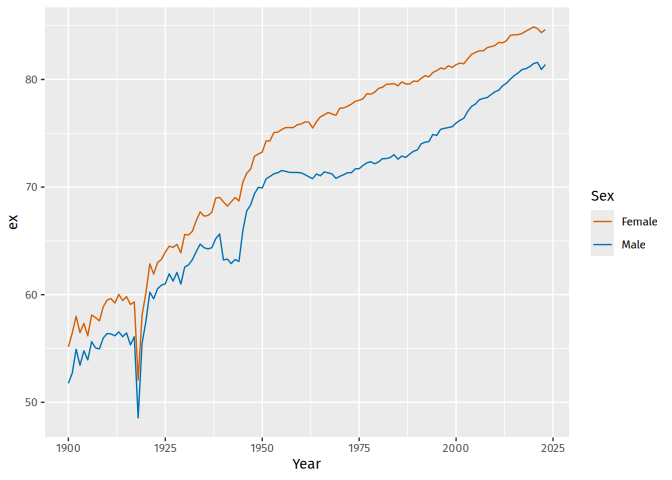
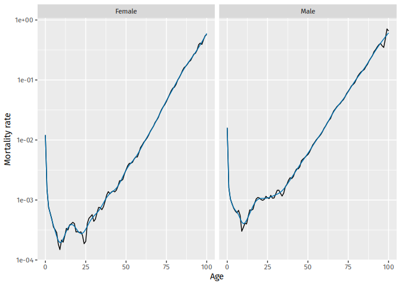
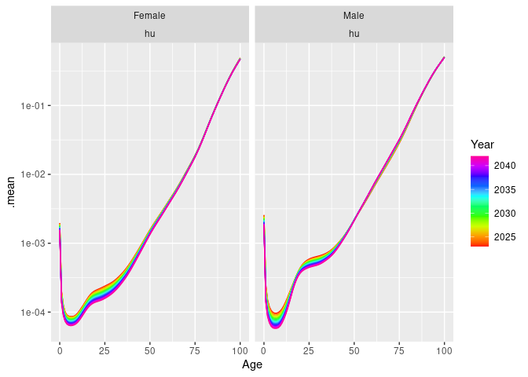

The goal of vital is to allow analysis of demographic data using tidy tools.
Installation
You can install the stable version from CRAN:
pak::pak("vital")You can install the development version from Github:
pak::pak("robjhyndman/vital")Example
First load the necessary packages.
library(vital)
library(dplyr)
#>
#> Attaching package: 'dplyr'
#> The following objects are masked from 'package:stats':
#>
#> filter, lag
#> The following objects are masked from 'package:base':
#>
#> intersect, setdiff, setequal, unionvital objects
The basic data object is a vital.
# Examples using Victorian females
vic_female <- aus_mortality |>
filter(State == "Victoria", Sex == "female")
vic_female
#> # A vital: 12,000 x 8 [1Y]
#> # Key: Age, Sex, Code [100]
#> Year Age Sex State Code Mortality Exposure Deaths
#> <int> <int> <chr> <chr> <chr> <dbl> <dbl> <dbl>
#> 1 1901 0 female Victoria VIC 0.100 13993 1405
#> 2 1901 1 female Victoria VIC 0.0235 13079 308
#> 3 1901 2 female Victoria VIC 0.00806 12409 100
#> 4 1901 3 female Victoria VIC 0.00472 12931 61
#> 5 1901 4 female Victoria VIC 0.00370 12986 48
#> 6 1901 5 female Victoria VIC 0.00324 13589 44
#> 7 1901 6 female Victoria VIC 0.00310 13872 43
#> 8 1901 7 female Victoria VIC 0.00284 14077 40
#> 9 1901 8 female Victoria VIC 0.00261 14198 37
#> 10 1901 9 female Victoria VIC 0.00225 14694 33
#> # ℹ 11,990 more rowsThis example contains just Victorian females from 1901 to 2020. It must have a time index variable (here Year), an age variable (here Age) and optionally other categorical variables that uniquely define each time series (here Sex, State and Code). These categorical varaibles, along with the age variable, are “key” variables. Other columns contain variables of interest: Mortality, Exposure, Deaths.
There are autoplot() functions for plotting vital objects.
vic_female |>
autoplot(Exposure)
Life tables and life expectancy
Lifetables can be produced using the life_table() function. It will produce lifetables for each unique combination of the index and key variables other than age.
# Lifetable in 2000
vic_female |>
filter(Year == 2000) |>
life_table()
#> # A vital: 100 x 14 [?]
#> # Key: Age, Sex, Code [100]
#> Year Age Sex Code mx qx lx dx Lx Tx ex rx
#> <int> <int> <chr> <chr> <dbl> <dbl> <dbl> <dbl> <dbl> <dbl> <dbl> <dbl>
#> 1 2000 0 fema… VIC 4.02e-3 4.01e-3 1 4.01e-3 0.996 82.7 82.7 0.996
#> 2 2000 1 fema… VIC 2.70e-4 2.70e-4 0.996 2.69e-4 0.996 81.7 82.0 1.00
#> 3 2000 2 fema… VIC 3.38e-5 3.38e-5 0.996 3.37e-5 0.996 80.7 81.0 1.00
#> 4 2000 3 fema… VIC 3.32e-5 3.32e-5 0.996 3.30e-5 0.996 79.7 80.0 1.00
#> 5 2000 4 fema… VIC 9.83e-5 9.83e-5 0.996 9.79e-5 0.996 78.7 79.0 1.00
#> 6 2000 5 fema… VIC 9.65e-5 9.65e-5 0.996 9.61e-5 0.996 77.7 78.0 1.00
#> 7 2000 6 fema… VIC 2.22e-4 2.22e-4 0.995 2.21e-4 0.995 76.7 77.0 1.00
#> 8 2000 7 fema… VIC 6.32e-5 6.32e-5 0.995 6.29e-5 0.995 75.7 76.0 1.00
#> 9 2000 8 fema… VIC 3.16e-5 3.16e-5 0.995 3.14e-5 0.995 74.7 75.1 1.00
#> 10 2000 9 fema… VIC 1.25e-4 1.25e-4 0.995 1.25e-4 0.995 73.7 74.1 1.00
#> # ℹ 90 more rows
#> # ℹ 2 more variables: nx <dbl>, ax <dbl>Life expectancy (ex with x = 0 by default) is computed using life_expectancy():
# Life expectancy
vic_female |>
life_expectancy() |>
ggplot(aes(x = Year, y = ex)) +
geom_line()
Smoothing
Several smoothing functions are provided: smooth_spline(), smooth_mortality(), smooth_fertility(), and smooth_loess(), each smoothing across the age variable for each year.
# Smoothed data
vic_female |>
filter(Year == 2000) |>
smooth_mortality(Mortality) |>
autoplot(Mortality) +
geom_line(aes(y = .smooth), col = "blue") +
ylab("Mortality rate") +
scale_y_log10()
Lee-Carter models
Lee-Carter models (Lee & Carter, JASA, 1992) are estimated using the LC function which must be called within a model function:
# Lee-Carter model
lc <- vic_female |>
model(lee_carter = LC(log(Mortality)))
report(lc)
#> Series: Mortality
#> Model: LC
#> Transformation: log(Mortality)
#>
#> Options:
#> Adjust method: dt
#> Jump choice: fit
#>
#> Age functions
#> # A tibble: 100 × 3
#> Age ax bx
#> <int> <dbl> <dbl>
#> 1 0 -4.15 0.0158
#> 2 1 -6.40 0.0219
#> 3 2 -7.01 0.0196
#> 4 3 -7.32 0.0181
#> 5 4 -7.36 0.0160
#> # ℹ 95 more rows
#>
#> Time coefficients
#> # A tsibble: 120 x 2 [1Y]
#> Year kt
#> <int> <dbl>
#> 1 1901 110.
#> 2 1902 111.
#> 3 1903 109.
#> 4 1904 100.
#> 5 1905 98.4
#> # ℹ 115 more rows
#>
#> Time series model: RW w/ drift
#>
#> Variance explained: 73%
autoplot(lc)
# Forecasts from Lee-Carter model
lc |>
forecast(h = 20) |>
autoplot() +
ylab("Mortality rate") +
scale_y_log10()
Coherent functional data models
Functional data models (Hyndman & Ullah, CSDA, 2007) can be estimated in the same way as Lee-Carter models, with LC replaced by FDM. A coherent functional data model (Hyndman, Booth & Yasmeen, Demography, 2013), can be used as follows.
# Coherent forecasts from FDM model
nor <- norway_mortality |>
dplyr::filter(Sex != "Total") |>
collapse_ages()
fit <- nor |>
smooth_mortality(Mortality) |>
make_pr(.smooth) |>
model(hby = FDM(log(.smooth), coherent = TRUE))
fc <- fit |>
forecast(h = 20) |>
undo_pr(.smooth)
nor |>
filter(Year > 1950) |>
ggplot(aes(x = Age, y = Mortality, group = Year)) +
facet_grid(. ~ Sex) +
geom_line(color = "grey") +
scale_y_log10() +
geom_line(data = fc, aes(y = .mean, color = Year)) +
scale_color_gradientn(colors = rainbow(25))
#> Warning in scale_y_log10(): log-10 transformation introduced infinite values.
Here, make_pr() makes the product-ratios, while undo_pr() undoes them.